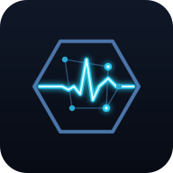

ANNA OS LiteThis phone is the AED. Here you set what it will find. Someone can run
this for a group, or you can set it yourself and then go and work on the patient.
Nothing here is measured. Depth is yours to judge — there is no sensor in a phone
lying beside you, and none in a bottle.